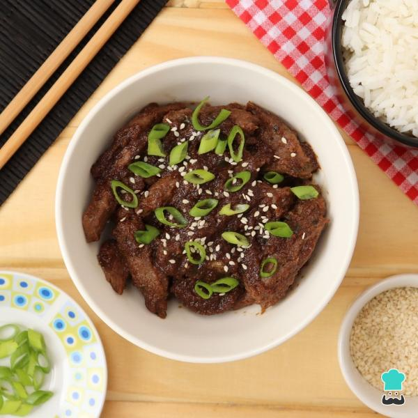
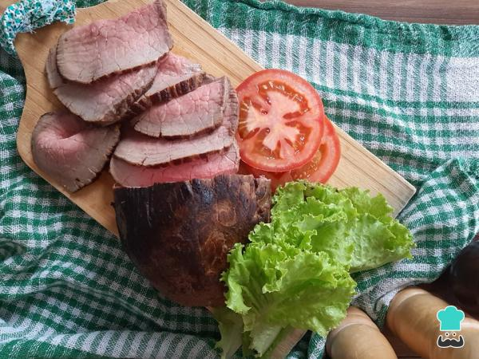
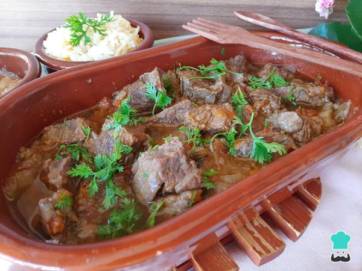
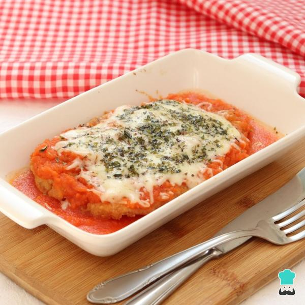

Pratos de carne
Carne moida com legumes

Bulgogi coreano
Rosbife de lagarto bovino
Carne de panela sem água
Pratos de peixe
Bacalhau refogado
com tomate e cebola
Peixe empanado
com farinha de aveia
Filé de polaca do Alasca
ao forno com batatas
Filé de tilápia à parmegiana
Pratos vegetarianos
Wrap vegetariano
Tutu de feijão vegano

Strogonoff vegetariano

Picadinho vegano